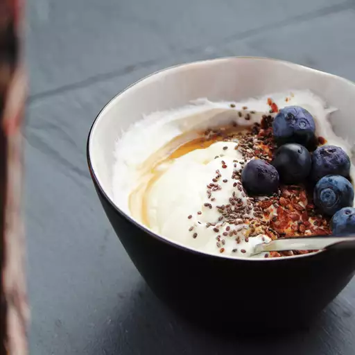

Easy Greek Yogurt

Description
I have this for breakfast most mornings. The extra calcium is a plus. I
add honey and granola for a delicious and filling breakfast. You can use
your imagination with additions such as fresh fruit, preserves, or even
chopped nuts. I have made this with flavored yogurt, but I prefer plain.
You can even use the yogurt fluid (whey) instead of water in baking
recipes.
Ingredients
- coffee filters, or as needed
- 1 (32 ounce) container plain yogurt
Steps
-
Line a colander with coffee filters and set it in a large bowl. Add
yogurt and cover with a clean kitchen towel. Place in the refrigerator
for 6 hours to overnight; the fluid from the yogurt will collect in the
bottom of the bowl.
-
Scoop yogurt out of the coffee filters and back into the original
container for storage. Discard accumulated fluid or reserve for other
use.